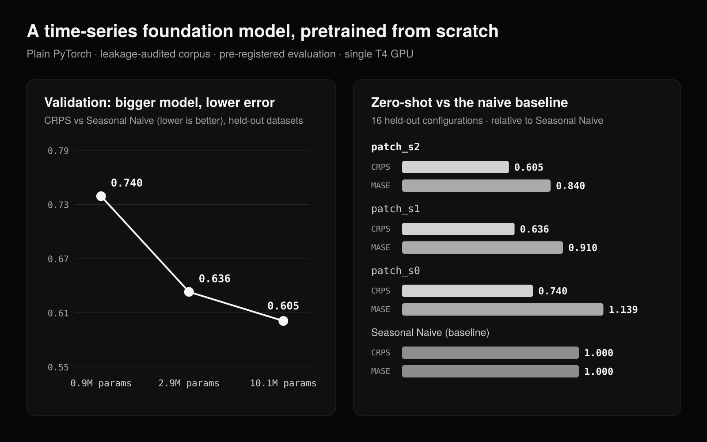

Time-series foundation model, from scratch
Can a small transformer, pretrained from scratch on public data checked for overlap with the benchmark, forecast series it has never seen?
A decoder-only transformer, its tokenizers, training loop and sampling written by hand in PyTorch, pretrained on a free Colab GPU and scored zero-shot with the official GIFT-Eval code. An audit of the pretraining corpus found copies of benchmark series inside it; every one was removed before training. Evaluation rules were fixed in git before scoring.
0.605zero-shot CRPS relative to Seasonal Naive on held-out datasets, down from 0.740 for the smallest model
801pretraining series found to overlap the benchmark, removed before training
10.1Mparameters, every layer written by hand in PyTorch
What didn't work
Prediction intervals are too narrow: the 80% interval covers 65% of outcomes, because long forecasts feed back medians. The first GPU run also diverged in half precision until extreme values were clipped.